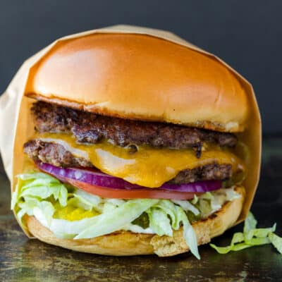

Smash burger

A quick, easy and delicious smash burger, homemade in minutes
Smash burgers start life as balls of ground beef. As soon as they hit the grill they're pressed or smashed with a spatula to form a thin
patty. This creates extra browning and flavour on the outside while remaining juicy on the inside.
Ingredients
- Ground beef (the fattier the meat, the juicier the burger)
- A simple sauce made with mayo, mustard, onions and pickles
- Brioche buns
- Sliced cheddar cheese
- Pickles, onion, lettuce and tomato to top the patties
Steps
- Prepare patties. Form 2 114g balls
- Combine mayo, mustard, onions and pickles to make your sauce
- Slice lettuce, onions, pickles and tomatoes ready to assemble just before your patties are done
- Toast and butter buns
- Heat a little oil over medium and once hot place your beef balls into the pan and smash each ball
into a thin patty using a spatula. Sear for 2 minutes then flip and place cheese slice on top.
Cook for a further minute
- Let's construct our burger. Add lettuce, tomatoes, onions and pickles to our liberally sauced buns.
Stack both patties on top of each other and add top bun
- Wolf down